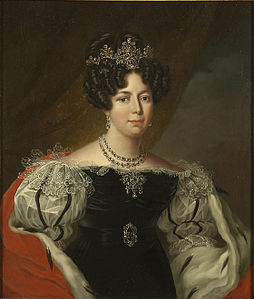

XIV - DÉSIRÉE CLARY
NAPOLEON Bonaparte (1769-1821), chàng sĩ quan bé nhỏ trong đội Pháo binh của Cách mạng Pháp hồi 26 tuổi đến năm 35 tuổi (1804) được dân chúng tôn lên làm Hoàng đế của người Pháp, quả thật là một bậc kỳ tài trong Lịch sử thế giới. Và cũng như hầu hất những bậc vĩ nhân trên thế giới, Napoleon có rất nhiều người yêu, và rất nhiều vợ. Những chuyện tình duyên của ông đã được sử sách nói đến không ngớt, nhắc đi nhắc lại mãi, mà các thế hệ loài người đọc lúc nào cũng thấy thích thú say mê. Những bà vợ trẻ và đẹp của Napoleon I được dùng làm đề tài cho hàng nghìn hàng vạn sách báo trên thế giới đủ các thứ tiếng, trải qua hết đời này đến đời khác vẫn còn quyến rũ trí óc tò mò, học hỏi của các lớp người. Trước khi nói đến những bà vợ có danh tiếng nhất của Napoléon I: Joséphine, Walewska, Marie Louise…chúng ta không nên bỏ qua vị hôn thê đầu tiên của ông, từ một cô hàng vải nhút nhát ở Marseille trở thành một bà hoàng hậu oai nghiêm của xứ Suède- Désirée Clary.

Desirée Clary 1807
Cô con gái út của ông chủ hàng vải chỉ được hân hạnh lọt vào cặp mắt xanh của Napoléon trong lúc ban sơ, khi ông này hãy còn là một Thiếu úy pháo quân vừa ở đảo Corse qua. Nhưng từ đấy nàng đã bước vào Lịch sử dưới tia sáng chói lọi của ngôi sao Hoàng đế đang xuất hiện trên trời Âu. Người anh cả của Napoléon Bonaparte là Joseph Bonaparte đã kết hôn với người chị cả của Désirée. Cô Julie không đẹp, nhưng hiền lành dễ thương.
Thấy Napoléon bê bối, mèo mỡ lung tung, Joseph quyết định lập gia thất cho em, và một hôm đưa chàng đến chơi nhà mẹ vợ.
Napoléon mặc y phục lôi thôi lếch thếch. Tóc để phủ dài hai bên tai. Quần áo nhà binh thì nhầu nát, cũ kỹ, da mặt xanh rờn, khuôn mặt dài và nhọn như lưỡi dao, trông không có vẻ đẹp trai tý nào cả. Điệu bộ thì nóng nảy, cương quyết, tuy vẫn lịch thiệp và nhã nhặn.
Nơi phòng khách của gia đình Clary, Désirée ngồi tiếp chuyện với Napoleon. Ngay giây phút đầu tiên thái độ, cử chỉ, ngôn ngữ và cặp mắt sáng rực của chàng đã làm cho trái tim Désirée đê mê xao động.
Bẽn lẽn, rụt rè, nàng chưa dám thổ lộ tâm tình với chàng nhưng sau khi chàng về, nàng nhõng nhẽo thú thật cùng chị: “ Napoléon là một người khác thường…Em yêu chàng rồi đó chị ạ…Em bắt đền chị đó…” Julie mỉm cười:
- Sao em lại bắt đền chị?
- Ai bảo chị giới thiệu chàng cho em.
Ngày hôm sau, Napoléon đến, gặp Désirée ngoài vườn,Trông thấy chàng Désirée đỏ ửng đôi má. Chàng nắm tay nàng hỏi vội vã:
- Thế nào? Em muốn kết hôn với anh không?
Désirée thẹn chưa trả lời. Napoléon hối thúc:
- Sao em? Nói nhanh lên cho anh nghe…Anh nóng lòng muốn biết em nghĩ như thế nào. Em muốn làm vợ anh không?
Désirée nhút nhát cúi mặt xuống mỉm cười không nói ra lời, tay trái cứ mân mê một cành lá. Napoléon lại thúc dục:
- Sao em? Em yêu anh hay không yêu anh? Anh thì yêu em rồi đó…Em thì sao? Nói mau lên.
Nàng ngước mắt lên âu yếm nhìn chàng. Không cần dài dòng, khách sáo vô ích, Napoléon kéo Désirée vào lòng, ôm ghì lấy nàng, đè lên môi nàng và hôn say sưa thật lâu, thật lâu rồi buông ra, tủm tỉm cười nhìn nàng hỏi:
- Em là vị hôn thê của anh nhé?
Désirée sung sướng gật đầu và siết chặt bàn tay người yêu.
Napoléon nhờ thắng trận Toulon, vừa được đặc biệt thăng chức Thiếu tướng, và nhận được lệnh của bộ Tổng tham mưu gọi lên Paris gấp.
Chàng đến người yêu để tạm từ giã và căn dặn:
- Anh lên Paris xem như thế nào, rồi anh sẽ về ngay để cưới em. Em chờ anh nhé.
- Vâng, em chờ anh.
Napoléon ở luôn trên thủ đô.
Désirée Clary buồn, nhớ khóc, viết thư:
“ Anh ơi. Anh giữ sức khỏe quý báu của anh nhé. Sức khỏe của anh chunhs là sức khỏe của em, vì không có anh chắc là em không sống được. Anh nhớ lời thệ ước trăm năm mà anh đã trao cho em. Em thì em vẫn trung thành với lời hứa…”
Napoléon trả lời thư cũng tha thiết yêu đương. Chàng xin ảnh của Désirée và gởi ảnh tặng nàng,
Nhưng người anh cả của gia đình là Etienne Clary, không thích Napoléon lắm. Ngắm bộ tịch của chàng, Etienne đã có lần bảo với Désirée:
- Tao tưởng rằng gia đình mình có một thằng Bonaparte cũng đủ rồi. Chị mày lấy Joseph thì được chứ mày muốn lấy Napoléon nữa tao thấy không nên. Thằng đó không có tương lại đâu.
Kế đó, bà Clary, mẹ Desiree đưa nàng sang du lịch bên Ý. Thành phố Gênes. Désirée hơi chán nản, phần thì thấy gia đình không sốt sắng về việc nàng đính hôn với Napoléon, phần thì người yêu ở luôn trên Paris, đường xá xa xôi, thư từ bất tiện giữa lúc nước Pháp đang trải qua một cuộc cách mạng lớn, tình thế lộn xộn, Désirée dần lười viết thư cho “ vị hôn thê”.
Napoléon ở Paris vẫn nhở Désirée và viết cho anh cả Joseph ở Marseille:
“ Anh à, sao dạo này Désirée không viết thư cho tôi nữa?”
Có lần, chàng chán nản, viết cho Joseph: “ Cuộc đời là một giấc mộng thoáng qua.”
Thấy anh có hạnh phúc với Julie, chàng đã thốt ra một câu: “ Cái anh Joseph khỉ thế mà sung sướng!” “ Qu’il est heureux, ce coquina de Joseph!”
Bặt tin Désirée lâu quá, Napoléon nhắn hỏi anh cả: “ Désireé còn sống hay đã chết?”
Désirée thật ra vẫn một lòng yêu nhớ vị hôn phu. Nàng lại biết rằng Napoleon có số đào hoa và ở Paris chàng vẫn vui thích với mấy cô thiếu nữ và mấy bà góa chồng còn trẻ và đẹp. Nàng bỗng nổi ghen gửi cho chàng một bức thư:
“ Lâu lắm, anh chả viết thư cho em. Sao thế anh? Anh có biết rằng ở đây em buồn lắm, chán lắm không?Dù non sông cách trở, em vẫn một lòng nhớ anh. Cuộc đời cuả em vẫn là của anh. Vừa rồi có một người bạn của anh Joseph có đến Gênes, và gặp em. Y cho biết ở Paris người ta chơi bời vui thích lắm…Em mong rằng cuộc sống phồn hoa náo nhiệt ở thủ đô không thể khiến anh chóng quên con bé nhà quê ở Marseille, vợ chưa cưới của anh. Y gặp anh cặp tay đi chơi mát với bà T…(1) trong khu rừng Boulogne, nhưng em nghĩ có lẽ nào anh lại quên hôm đi dạo mát của hai đứa mình trên bến Marseille?”
Désirée không ngờ một điều là Napoléon đang nổi tiếng như cồn, nhờ chiến công của chàng trong ngày lịch sử 13 Vendemiaire…Napoléon được chính phủ cách mạng đặc biệt lưu ý, và được các giới chính khách Paris tâng bốc, đề cao như một vị anh hùng. Chàng cũng đang say mê một quả phụ đẹp lộng lẫy, lớn hơn chàng 12 tuổi, và cũng yêu chàng tha thiết, Bà Joséphine de Beauharnais.
Bà này là vợ của Đại tướng Beauharnais đã tử trận, và là bạn thân của các nhân vật cao cấp, nhất là của Barras, Chủ tịch Chính phủ cách mạng.
So sánh Joséphine với Désirée Clary, Napoléon thấy hai người khác nhau một trời một vực.
Thế rồi, không bao lâu Napoleon chính thức kết hôn với Joséphine…
Napoléon kết hôn với Josephine vì ái tình, nhưng cũng vì tham vọng. Địa vị của Joséphine, một quả phụ giàu sang ở thủ đô, với sắc đẹp lộng lẫy và quý phái quyễn rũ Napoléon hơn là một cô gái ở tỉnh, dầu cô này hiền lành chất phác hơn. Viên Thiếu tướng trẻ tuổi đang mơ chuyện cao xa, hy vọng nhờ Joséphine vận động với Chủ tịch chính phủ cách mạng, Barras, bạn thân của nàng, để cho chàng được lên Trung tướng Tư lệnh Bộ đội Viễn chinh Pháp sang đánh giặc ở Italie. Và chàng được toại nguyện.
Nghe tin Napoléon đã thành hôn với Joséphine. Désirée Clary gửi cho vị hôn phu bạc tình một bức thư ngây thơ cảm động sau đây:
“Anh đã cưới vợ thật rồi ư? Thôi thế là Désirée đau khổ này không còn hy vọng gì được yêu anh nữa, được nhờ anh nữa! Từ nay, em chỉ còn một chút an ủi là biết rằng anh sẽ tin chắc nơi mối tình chung thủy của em; chung thủy với anh rồi chết. Em sẽ cho anh thấy rằng em sẽ trung thành mãi với lời thề nguyện…Giữa lúc anh đang tận hưởng hạnh phúc, em mong rằng anh đừng quên Désirée. Anh nên thương hại cho số phận của nó…”
Được thư này, Napoléon thành thực hối hận và đau xót lắm. Ông biết rằng Désirée vẫn yêu ông tha thiết nhưng vì hoàn cảnh chính trị, khi ông chọn lựa Joséphine ông đành chịu vậy, không thể trở về với người yêu cũ. Nhưng ông quyết thế nào cũng nâng đỡ Désirée. Ông tự hứa sẽ xây dựng cho Désirée một tương lai rực rỡ, sẽ đưa nàng lên một địa vị xứng đáng, sẽ giới thiệu nàng cho một vị tướng sĩ có danh vọng. Ông liền sắp đặt gả Désirée cho Thiếu tướng Dophot trẻ tuổi đẹp trai, chỉ huy dưới quyền của ông. Hai bên đã ưng thuận nhau rồi, Désirée sắp sửa làm lễ thành hôn với vị hôn phu mới thì rủi thay cho số phận của nàng Dophot bị tử trận ngày 28-12-1797.
Désirée khóc suốt mấy tháng, bỏ ăn bỏ ngủ.
Lúc bấy giờ, nhờ Napoléon mà anh ruột của ông là Joseph Bonaparte được làm Đại sứ Pháp ở Tòa thánh Roma (La mã) bên cạnh Giáo hoàng Pie VI. Vợ của Joseph, Julie Clary chị ruột của Désirée. Ở nhờ anh rể và chị ruột Désirée được an ủi, vỗ về và làm quen với nhiều nhân vật thân cận của Tòa Đại sứ. Joseph giới thiệu cô em vợ cho một viên Thiếu tướng khác, bạn thân của ông là Bernadotte.
Thiếu tướng Bernadotte lớn hơn Napoléon 5 tuổi. Trước kia ở dưới quyền của Napoléon, sau làm đại sứ Pháp ở Vienne. Bernadotte nổi tiếng là một vị quan cương quyết và cứng rắn, thường chống chọi Napoléon. Désirée chưa được quen biết Bernadotte nhiều nhưng đang lúc buồn rầu thất vọng, được anh rể và chị gái giới thiệu là nhận lời ngay. Hôn lễ cử hành ngày 18-8-1798 tại Paris, do Joseph là anh và Lucien là em của Napoléon làm chứng. Được tin này Napoléon hối tiếc chứ không vui mừng gì vì bây giờ ông mới nhận thấy Joséphine có tính nết lẳng lơ, không đứng đắn chân thật bằng Désirée Clary. Ghen và buồn, ông chỉ gửi về Joseph một câu chúc mừng cho Désirée ngắn ngủi như sau: “ Tôi chúc Désirée có hạnh phúc với Bernadotte.” Désirée hiểu ngầm rằng Napoléon vẫn còn yêu mình.
Napoléon lên chức Đại tướng, với những chiến công oanh liệt ở Italie,ở Egypte…Cả Châu Âu, Phi châu, Cận đông đã bắt đầu ghê sợ vị anh hùng của Cahcs mạng Pháp, đem quân đến đâu là thắng đến đó, và thắng những trận vang lừng nhất của Lịch sử.
Bernadotte ganh ghét bậc anh tài được lừng danh bốn bể, và tìm cách làm hại Napoléon. Nhưng Désirée Clary, cô vợ trẻ, đẹp ngoan ngoãn của ông dùng lời lẽ dịu hiền khuyên lơn và can gián không cho ông có một hành động nào có thể cản trở sự nghiệp và thanh danh của người yêu cũ.
Ở Egypte về, Napoléon gây cuộc đảo chính, rồi được tôn lên ngôi Hoàng đế nước Pháp. Bernadotte căm giận hết sức, nhưng nghe lời vợ, ông cũng không phản đối, để mặc Napoléon tha hồ làm mưa làm gió, chuyển động tất cả các ngai vàng châu Âu.
Một năm sau lễ thành hôn, Désirée sinh được con trai. Chiều theo ý vợ, Bernadotte xin Napoléon làm cha đỡ đầu cho đứa nhỏ. Napoléon vui vẻ nhận lời ngay, và đặt tên cho con trai đầu lòng của Désirée là Oscar, lấy tên một nhân vật của thi sĩ Ossian mà Napoléon mến phục. Hơn nữa, lên ngôi Hoàng đế xong, Napoléon liền tặng cho vợ chồng Bernadotte (nói là tặng cho Désirée thì đúng hơn) một lâu đài tráng lệ đáng giá 400.000 quan, và thăng chức Bernadotte lên làm Thống chế.
Désirée Clary sung sướng và hãnh diện được Napoléon cất nhắc từ một cô hàng vải ở tỉnh lên làm bà Thống chế ở Thủ đô, và được Hoàng đế luôn luôn săn sóc đến. Tuy vậy Désirée không thích ra vào Cung điện của Napoléon vì nàng ganh ghét Hoàng hậu Joséphine. Hễ ai nhắc đến tên Joséphine thì Désirée bĩu môi nói: “ Cái con mẹ già ấy chỉ làm khổ Hoàng đế”.
Năm 1805, Thống chế Bernadotte được lệnh chỉ huy một quân đoàn ở Asteslitz. Chiến công của Bernadotte không được rực rỡ lắm, nhưng Napoléon cũng ban thưởng ông, và tặng ông chức Hoàng tước Vương quốc Ponte Corvo.
Năm 1810, Hoàng đế Napoleon ký sắc lệnh bổ Thống chế làm Phó vương ở Rome, với lương tháng hai triệu Pháp kim. Bernadotte cùng vợ sắp sửa đi nhậm chức mới thì có một việc lạ lùng xảy ra.
Vua Charles XIII nước Suède, bắc Âu, già sắp chết, không có con trai nối ngôi, gửi thư xin Napoléon cho ông một người kế vị. Quốc hội Suède cũng đồng thanh gửi lời cầu khẩn ấy. Napoléon liền cử Bernadotte lên ngôi Vua Suède. Trong thâm tâm của ông, ông muốn cho Désirée Clary, người yêu cũ lên chức Hoàng hậu. Thế là ngày 20-5-1810, nhờ uy quyền của Napoléon, Bernadotte kế vị vua Charles XIII và Désirée Clary làm Hoàng hậu nước Suède.

Desirée Clary 1822
Tiễn Bernadotte và Désirée ra đi, Napoléon còn tặng cho hai vợ chồng một triệu Pháp kim, và phong chức tước cho người anh ruột của Désirée ở Marseille.
Désirée chỉ ở Stockholm, thủ đô Suède, một thời gian ngắn, rồi trở về Paris. Nơi đây, Hoàng hậu Désirée có người chị ruột Julie, vợ Joseph, cũng được Napoléon cho làm Hoàng hậu xứ Espagne.
Désirée chỉ thích ở Paris ăn chơi thỏa thích. Mãi đến năm 1823, Hoàng hậu mới chịu đến Stockholm để dự lễ cưới của Thái tử Oscar, con trai trưởng của bà. Rồi từ đó ở luôn xứ Suède.
Năm 1844, Bernadotte chết, Thái tử Oscar liền kế vị. Hoàng hậu Désirée còn sống 15 năm nữa, thọ 80 tuổi.
Bà vẫn nhắc đến Napoléon mãi mãi và mỗi lần bà lấy ra khoe với mọi người những bức thư tình cũ kỹ của chàng Trung úy Napoléon Bonaparte gửi cho bà ở Marseille hồi còn 18 tuổi thì đôi mắt của bà sáng rực hẳn lên, nét mặt bà hồng hào, bà nở nụ cười hãnh diện, cất giọng nói đê mê:
- Tôi không bao giờ quên rằng tôi là mối tình đầu tiên của Napoléon, và mối tình trong sạch nhất của Hoàng đế
Vua nước Suède hiện nay là Gustave V, là cháu ba đời của Hoàng hậu Desiree Clary và Quốc vương Bernadotte, do Napoléon đặt lên ngai vàng xứ ấy, từ năm 1810
Chú thích:
(1) Bà Tallien, một tình nhân của Napoléon ở Paris